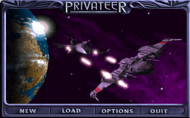
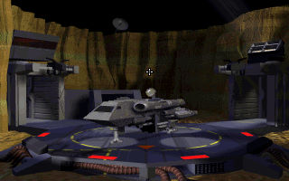
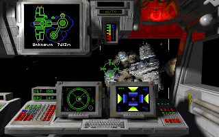

名稱：銀河飛將：私掠者／先鋒 (Wing Commander: Privateer，英文版)
簡介：Origin 1993年出品的太空飛行戰鬥模擬與冒險貿易遊戲，屬於銀河飛將系列的外傳。
同年推出「語音資料片（Speech Pack）」，1994年推出「正義出擊（Righteous Fire）」
任務資料片，同年再推出加入更多語音的整合光碟版。台灣由智冠代理進口 [待補]。



備註：本版為光碟版，要玩主程式，請執行PLAY.BAT；要玩任務資料片，請執行PLAY2.BAT。
保護：磁片版無保護，光碟版為光碟。
檔案：privater-disk.rar = 磁片版